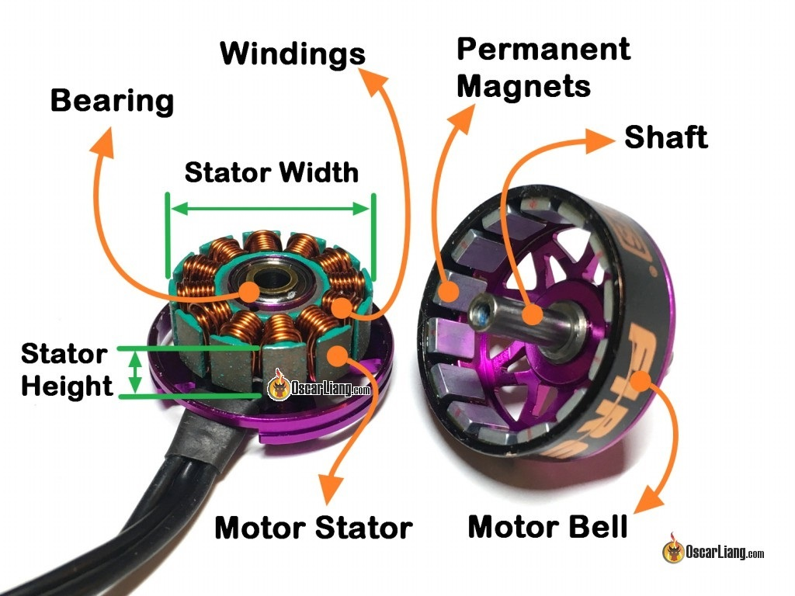

Multirotor Drone Terms
30 Dec 2020
References
- Oscarliang.com very detailed overview of motors and propellers
- FAA UAV Ruling, 28 Dec 2020
- ArsTechnica: FAA finally sets rules for piloting small drones
- ArduPilot docs
Frame Sizes
| Class | Dimension |
|---|---|
| Nano | 80-100 mm |
| Micro | 100-150 mm |
| Small | 150-250 mm |
| Medium | 250-400 |
| Large | +400 mm |
Propulsion


- Motors
- Motors are rated by a 4 digit number AABB, like 2213: stator is 22mm in diameter, stator height is 13mm
- Taller stator gives more power at higher RPM
- Wider stator gives more torque at lower RPM
- KV ratings relate RPMs to voltage.
- 900KV motor at 2V produces 1800RPM
- Typically lower KV motors produce more torque
- Motors for 3-6 inch diameter props have M5 shafts
- Typically have 16x16 mm mount points
- 22XX and 23XX motors typically have 12 poles and 14 magnets
- More poles = smoother flight
- Fewer poles = more powerful motors
- Motors are rated by a 4 digit number AABB, like 2213: stator is 22mm in diameter, stator height is 13mm
- Propellars
- 4 digit number: 8045 means, 8 inch diameter with a pitch of 4.5 inches
- Higher pitch produces more downward force
- 4 digit number: 8045 means, 8 inch diameter with a pitch of 4.5 inches
- Matching
- Typically you would pair high pitch propellars with low KV motors or the reverse
- For a 5 in prop, common motors are 2207, 2306, 2307, and 2407
- High torque, high power motors can create vibration and feedback into the IMU on the flight controller causing instability. Soft mounting your flight controller can help -Thrust to weight ratio
- Need at least twice the thrust compared to the weight of the drone
- Motor orientation:

Raspberry Pi and ArduPilot Flight Computer

Pixhawk